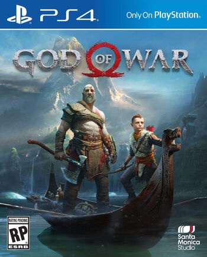
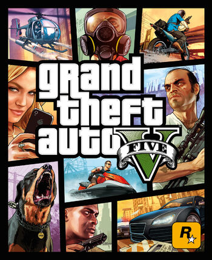

Uncharted 4: El desenlace del ladrón es la cuarta entrega de la saga Uncharted. Fue desarrollada por Naughty Dog y
publicada por Sony Computer Entertainment de forma exclusiva para PlayStation 4. el 10 de mayo de 2016. Se trata de la
secuela de Uncharted 3: La Traición de Drake, protagonizada por Nathan Drake por última vez.
Siete años después del final de Uncharted 3, Nathan se reúne con su hermano Sam; tratando de salvarlo de un villano despiadado
mediante la búsqueda de un legendario tesoro pirata de fábula del capitán Henry Avery.
God of War (2018)

God of War es la octava entrega de la saga God of War. Exclusivo del sistema PlayStation 4. Fue puesto a la venta el 20 de abril de 2018.
Han pasado años desde que Kratos tomó su venganza contra los Dioses Olímpicos. Habiendo sobrevivido la pelea final contra su padre Zeus,
Kratos vive ahora con su joven hijo Atreus en el mundo de los Dioses Nórdicos, una tierra hostil habitada por feroces monstruos y guerreros. Kratos deberá actuar como mentor y protector de su hijo, y tendrá que dominar la ira y enojo que tuvo durante muchos años y atar cabos sueltos.
Grand Theft Auto V

Grand Theft Auto V es la decimoquinta entrega de la saga Grand Theft Auto que fue lanzado el 17 de septiembre de 2013 para las consolas Xbox
360 y PlayStation 3. Su juego predecesor es Grand Theft Auto: The Ballad of Gay Tony, lanzado para las mismas plataformas. Es la segunda
entrega de la saga para consolas de "última generación", con mejoras gráficas muy notables, un mundo Sandbox más grande y realista, motor
físico anteriormente utilizado para GTA IV. Superó en una semana y media los mil millones de dólares acumulados, también nombrado el juego
del año en primer lugar.
La historia transcurre en la remodelada ciudad de Los Santos, donde Michael, Trevor y Franklin trabajan individualmente hasta que se cruzan sus vidas
y empiezan a trabajar en equipo robando bancos o realizando trabajos para diversos personajes.